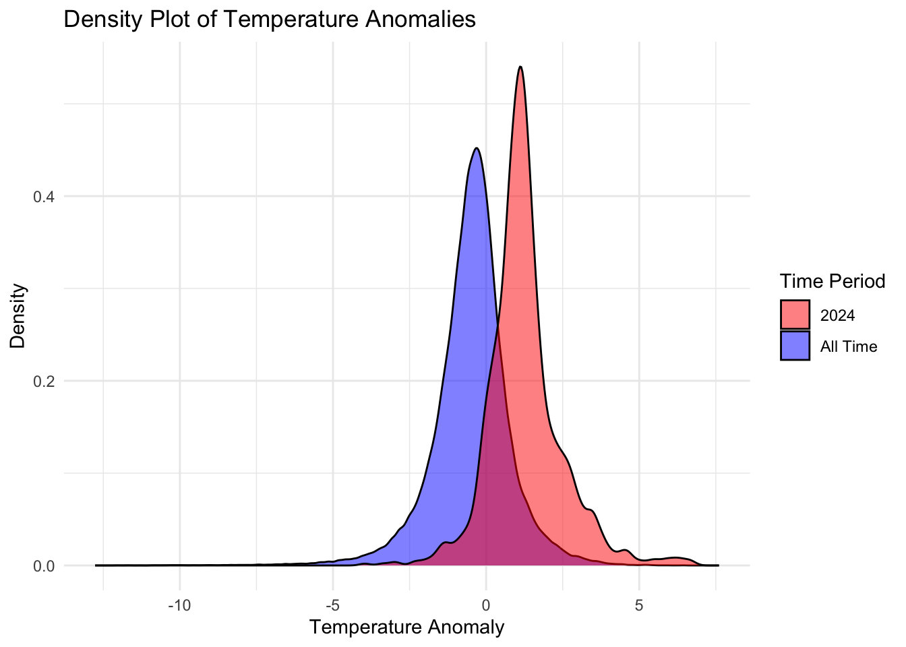
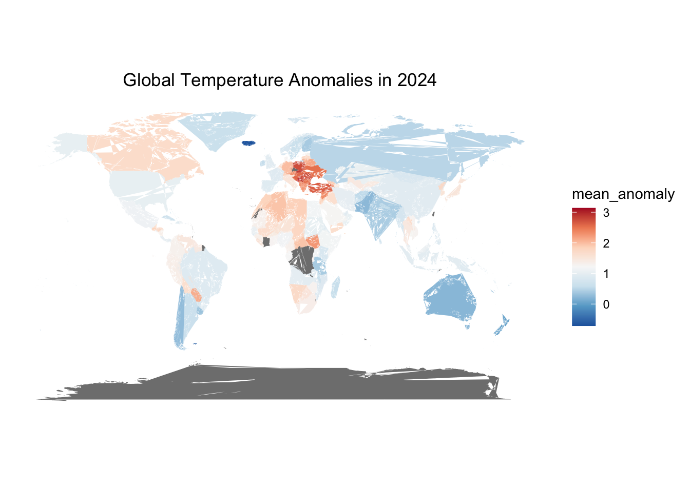
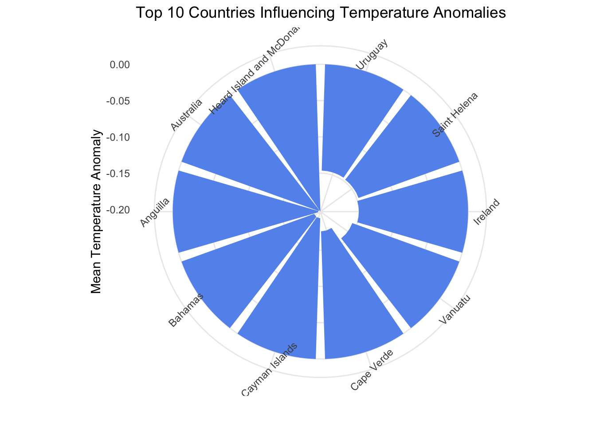

Data Analysis
1. Data Story
The code is designed to compare temperature anomalies between the year 2024 and all other years in the dataset. It uses density plots to visualize the distribution of temperature anomalies for these two time periods. By comparing these distributions, you can observe how the temperature anomalies in 2024 differ from the overall historical data.
2. Data Analysis Methods
Selection
Data Selection: The dataset used is
monthly-temperature-anomalies.csv. It includes a ‘Day’ column for dates and a ‘Temperature.anomaly’ column for temperature anomalies.Time Period Selection: Data is divided into two groups:
2024: Data for the year 2024.
All Time: Data for all other years combined.
Exploratory Data Analysis (EDA)
Conversion and Extraction:
The ‘Day’ column is converted to a Date type to facilitate time-based operations.
The ‘Year’ is extracted from the ‘Day’ to filter the data into two groups (2024 and all other years).
Data Cleaning and Manipulations
Filtering:
data_2024contains only the records from the year 2024.data_all_timecontains records from all years except 2024.
Visualization
Density Plot Creation:
Density Plot: A density plot is used to show the distribution of temperature anomalies.
Overlaying Density Plots: Two density plots are overlaid:
All Time: Distribution of temperature anomalies for all years except 2024.
2024: Distribution of temperature anomalies specifically for the year 2024.
Color Coding: Different colors are used to distinguish between the two groups:
Blue: All Time
Red: 2024
Legend: The
scale_fill_manualfunction creates a legend to clarify which color represents which time period.Labels and Theme: The plot is labeled and styled minimally for clarity.
Conclusions
Comparison: By comparing the density plots, you can identify differences in the distribution of temperature anomalies between the year 2024 and the historical average.
If the density for 2024 shifts significantly compared to the ‘All Time’ distribution, it might indicate unusual temperature patterns in 2024.
If the densities overlap significantly, the temperature anomalies in 2024 are consistent with historical trends.
1. Selection
Objective: The goal is to visualize global temperature anomalies for 2024 using a world map.
2. Exploratory Data Analysis (EDA)
Data Loading:
Libraries:
dplyrfor data manipulation,stringrfor string operations,ggplot2for visualization, andmapsfor geographic data.Data is loaded from a CSV file containing monthly temperature anomalies.
Initial Data Inspection:
Convert the ‘Day’ column to a
Datetype.Extract the year from the ‘Day’ column for aggregation purposes.
3. Data Cleaning and Manipulations
Data Aggregation:
Filter data for the year 2024.
Group data by region (Entity) and calculate the mean temperature anomaly for each region.
Data Cleaning:
- Adjust region names to match those in the
worldmap dataset. This involves renaming regions to ensure consistency between datasets.
Merge Data:
- Merge the aggregated temperature anomaly data with the world map data based on the region.
4. Visualization
Map Preparation:
- Define a clean, minimalistic theme for the map to ensure the focus remains on the data.
Plotting:
Use
ggplot2to create a world map, plotting temperature anomalies with a color gradient.The map uses the
geom_polygon()function to draw the world map andscale_fill_distiller()to apply a color palette representing temperature anomalies.
5. Conclusions
- Visual Insights: The final map provides a visual representation of temperature anomalies across different regions of the world for 2024. Colors indicate the magnitude of temperature anomalies, with a diverging color palette highlighting differences from the average temperature.
Code Summary:
Libraries: Loaded necessary libraries for data manipulation, string operations, and visualization.
Data Handling: Data was cleaned, aggregated, and merged with world map data.
Plotting: Generated a world map with a color gradient to represent temperature anomalies.
The plot effectively shows temperature anomalies globally, giving a clear view of how different regions compare in terms of temperature deviations from the norm for 2024.

Data Analysis Methods
Loading Libraries:
tidyverse: A collection of R packages for data manipulation and visualization.ggplot2: For creating graphics.ggiraphExtra: Provides additional ggplot2 features (though not explicitly used in this code).
Loading Data:
- The data is loaded from a CSV file located at
/Users/user/Desktop/Final_project/monthly-temperature-anomalies.csv.
- The data is loaded from a CSV file located at
Data Aggregation:
Data is grouped by
Entity(likely countries) and the mean temperature anomaly is calculated for each entity usingmean(Temperature.anomaly, na.rm = TRUE).The results are sorted in descending order of the mean temperature anomaly.
Top 10 Countries Selection:
- The code selects the top 10 countries with the highest mean temperature anomalies using
top_n(10, mean_anomaly).
- The code selects the top 10 countries with the highest mean temperature anomalies using
Visualization:
- A circular barplot is created to visualize the top 10 countries with the highest temperature anomalies.
Data Story
The analysis aims to identify and visualize the countries with the highest average temperature anomalies. By aggregating the temperature anomaly data per country and focusing on the top 10 countries with the highest mean values, this analysis highlights which countries are experiencing the most significant deviations from average temperatures. The circular barplot provides a clear and engaging visual representation of these top 10 countries.
Data Selection
Data Source: Monthly temperature anomalies.
Selection Criteria: Countries are selected based on the mean temperature anomaly. Only the top 10 countries with the highest mean anomalies are considered for the visualization.
Exploratory Data Analysis (EDA)
- The primary EDA step here involves aggregating data to find the mean temperature anomaly per country and sorting the countries to identify the top performers. This initial exploration helps in understanding which countries have the most significant temperature deviations.
Data Cleaning and Manipulations
Missing Values:
na.rm = TRUEis used in themean()function to handle any missing values in the temperature anomaly data.Aggregation: Data is aggregated to calculate mean temperature anomalies by country.
Visualization
Plot Type: A circular barplot is chosen to represent the top 10 countries with the highest mean temperature anomalies.
Plot Details:
Bars: Represent the mean temperature anomaly for each country.
Color: Bars are filled with a “cornflowerblue” color.
Coordination:
coord_polar(theta = "x")creates the circular effect.Theme:
theme_minimal()for a clean look, with rotated x-axis text for better readability.
Conclusions
- The circular barplot effectively highlights the countries most affected by temperature anomalies, providing a visual emphasis on the top 10 entities. This visualization can be useful for understanding which regions are experiencing the most significant temperature deviations and may help in further analyses or policy discussions related to climate change.

Final Conclusion
Through a detailed analysis of global temperature anomalies, we have derived several key insights:
Density Plot Analysis:
- The density plot reveals the distribution of temperature anomalies across different time periods. The year 2024 shows a distinct distribution compared to historical data, with a notable increase in temperature anomalies. This indicates a significant departure from the norm, suggesting an escalation in global warming effects.
Geospatial Visualization:
- The world map of temperature anomalies for 2024 highlights the regions most affected by extreme temperature changes. The map’s color gradient emphasizes areas with the highest mean anomalies, providing a visual representation of the geographic disparity in climate impacts. Countries with severe temperature increases are prominently marked, underscoring regions that may require urgent climate intervention and adaptation strategies.
Top Countries with Temperature Anomalies:
- The circular barplot identifies the top 10 countries experiencing the highest mean temperature anomalies. This visualization underscores the countries most influenced by temperature deviations, drawing attention to those likely facing the greatest challenges related to climate change. The ranking of these countries can inform targeted policy responses and international climate cooperation.
Overall, this comprehensive analysis underscores the urgent need for global efforts to mitigate climate change. By visualizing both spatial and temporal aspects of temperature anomalies, we gain a clearer understanding of the impacts and can better prioritize actions to address these critical issues.